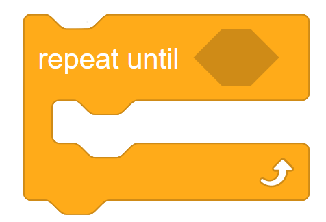

| Scratch Block | Java Code |
|---|---|
| In Scratch, we can use the forever loop to continuously iterate, or repeat, through something. Usually, this function is not useful in Java. However, there is a loop called a while loop. We can use this to repeat an exact amount of times, like a for loop, or an infinite amount of times. We can use the loop like so: while(true) { System.out.println("Hello world"); } This will continuously print out “Hello world” because the condition is “true.” We can also run the loop an exact number of times like so: int i = 0; while(i < 10) { i++; System.out.println("Hello world"); } This will run the code 10 times because as i increases, the while condition will eventually become false when i is 10. This is a useful loop to use. Below, we will also learn about a more popular loop used in Java for iteration. |
|
|  |
One of the main loops in Java is the for loop. A for loop repeats a certain action a specific number of times. It can also loop through elements, making it extremely useful and popular amongst coders. To use a for loop, we can write something along the lines of String statement = "Science"; for (int i = 0; i < statement.length(); i++) { System.out.println(statement.substring(0, i + 1)); } Lets take this step by step. We first have our variable, statement . This is a String and has the value “Science”. Next, let’s look at the for loop. We have defined a temporary integer, i . This integer has been given an upper bound. It is bound by statement.length(). This returns the length of a String, namely statement. Finally, every time we iterate through the loop, we do i++. This is equivalent to adding 1 to i. So, every time we go through the loop, 1 is added to i until we get to statement.length(). Inside the loop, we see we are printing out a substring of statement. The substring starts from the first character in statement every time, but ends at the index i+1. When this code is run, we will get the result: S Sc Sci Scie Scien Scienc Science Using this structure, although it might be complicated, we can make for loops do many things. Although massively useful, if a for loop is misused, it can end up running endlessly and overheating your computer, so make sure your code ends the for loop. |
| You might’ve used the contains block before in Scratch. This checks whether a certain letter is in a word, or a String. This is one of the functions, among many others, that we can use in Java. To use this, we can simply code, String statement = "Science"; boolean isInStatement = statement.contains("en"); We have our String “Science”. Then we define a variable with type boolean (this can have a value true or false). We can check whether a given substring is present in our statement and store the value into a boolean. If we print out the boolean, we will get True This is one of the many built-in functions in Java. |